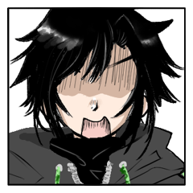
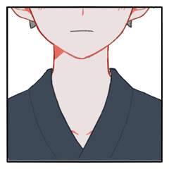

GM
神様のヒマ潰し5日目、よろしくおねがいします！
[ 櫛引 もみじ ] がダイスシンボルを公開。出目は 4 です。
[ 風晴 黎郎 ] がダイスシンボルを公開。出目は 5 です。
[ 冷風 細雪 ] がダイスシンボルを公開。出目は 3 です。
[ 喜久守 楓 ] がダイスシンボルを公開。出目は 5 です。
GM
プロット5：黎郎、楓
プロット4：もみじ
プロット3：細雪
風晴 黎郎
2d6 (2D6) ＞
12[6,6] ＞ 12
喜久守 楓
2d6 (2D6) ＞
8[3,5] ＞ 8
喜久守 楓
2D6>=5 （判定：骨法術） (2D6>=5) ＞ 7[2,5] ＞ 7 ＞ 成功
喜久守 楓
2D6>=5 （判定：呪術） (2D6>=5) ＞ 8[3,5] ＞ 8 ＞ 成功
GM
成功ですね。骨法術か呪術か、回避に使わせる特技の指定もお願いします。
GM
黎郎は呪術から回避判定を。妖魔化により回避に-1、獣化により接近戦ダメージ+1が乗ります。
櫛引 もみじ
回避判定に対してもみじから感情修正を
GM
黎郎は自分の秘密を公開し、回想シーンの演出をしてください。
風晴 黎郎
「(――俺は知っている。喜久守の誰よりも、細雪やもみじさんよりも、お前の事を知っている)」
風晴 黎郎
「(何度も俺と競い合って。
何度もくだらない事で争って。
――原因の大半は、俺だったかもしれないけど)」
風晴 黎郎
「(そうして確かに、一緒に生きてきたんだ)」
風晴 黎郎
「(忍は心を殺し、己を殺し、忍ぶことが正しいのだと、誰もが言う。そうした模範となることが理想なのだと、口を揃えて言いやがる)」
風晴 黎郎
先程の攻撃の余波でついた小さな傷が、忍者の代謝能力をも上回って血を流す。
風晴 黎郎
無常への怒りと悲しみに流れる涙のように。
風晴 黎郎
「――ああ、クソくらえだ、こんなもの」
風晴 黎郎
「心のままに生きて、何が悪い。
あいつの心が彩られていく日々は、
この先にずっと続いていくんだ。
此処で終わりになんて、させはしない」
風晴 黎郎
「だから、俺は斃れない。
楓がどれだけの業を誇ろうと。
どれだけ神秘の力を振るおうとも。
俺は必ずその上を行き――
お前もまた人間なのだと、証明する」
風晴 黎郎
【秘密：風晴黎郎】
あなたは超然たる喜久守楓に負かされ続ける一方で、誰よりも近くで触れ合い、喜久守楓が当たり前に笑う姿を見てきた。
あなたは喜久守楓が神などではなく自分たちと同じ人間であることを信じている。
それを証明するためには、喜久守楓に敗北というものを教えてやらなければならないと思っている。
あなたの本当の使命は【喜久守楓が人間であることを証明する】である。
GM
達成値に+3、+1、+1、-1をつけて判定をどうぞ！
風晴 黎郎
2D6+3+1+1-1>=10 （判定：見敵術） (2D6+3+1+1-1>=10) ＞ 6[2,4]+3+1+1-1 ＞ 10 ＞ 成功
GM
同時行動なのですが、回想を使ったので先にRPしてもらおうかな。
GM
同時にやりたかったら先に黎郎くんの行動の処理に移ります。
GM
了解しました。キャラシートの奥義情報出力から奥義データを貼ってください。
[ 風晴 黎郎 ] 器術 : 0 → 1
風晴 黎郎
奥義
《超絶機巧『戴天斬獲・天墜(あまおとし)』》
指定特技 ：絡繰術
エフェクト：追加忍法/くらまし/回数制限
効果・演出：遥かな高みが何するものぞ。伝統に背き絡繰りの御業さえ我がものとした少年の奥義は、習得に時の足りない廻鴉の忍法を絡繰りの補助によって無理やりに行使するもの。流星の如き一撃は、何処までも届くだろう。共に、同じ天を戴く為ならば。
風晴 黎郎
天狗(追加忍法)を指定特技：絡繰術で使用します。
風晴 黎郎
2D6>=5 （判定：絡繰術） (2D6>=5) ＞ 5[1,4] ＞ 5 ＞ 成功
風晴 黎郎
我を貫く為、宿星で振り直しをしたいです。
風晴 黎郎
2D6>=5 （判定：絡繰術） (2D6>=5) ＞ 7[3,4] ＞ 7 ＞ 成功
GM
了解しました。自分の秘密を公開し、回想シーンの演出をお願いします。
喜久守 楓
【秘密：喜久守楓】
あなたは風晴黎郎を深く愛している。
しかし同時にあなたはこの世界が限界を迎えつつあることを知っており、シノビガミの血を継ぐ者として世界を救わなければならないと思っている。
そのためにはあなたは人間としての自分を捨て去り、シノビガミとならなければならない。
あなたの本当の使命は【シノビガミとなり、世界を救う】である。
喜久守 楓
僕は初めてこの世界に産まれたんだと思う。
喜久守 楓
キミと並んで歩いたとき、キミと競い合った時、キミと笑いあった時、
喜久守 楓
あの日、握り返された手の熱を今でも覚えている。
喜久守 楓
『――気づいてないのはお前だけなんだよ馬鹿！』
喜久守 楓
あの日、キミが見せた可能性という煌めきが、この瞼に今でも焼き付いている。
喜久守 楓
数えきれないほどのモノを貰った。そしてそのどれもが、計り知れないほど大切だ。
喜久守 楓
だから、約束する。君にじゃなくて、僕が、僕自身に誓うんだ。
喜久守 楓
だから、僕は、僕自身との約束のために、
喜久守 楓
「……倒れるわけにいかないんだ。こんなところで」
喜久守 楓
まだ、今日の喧嘩も、明日の遊びも終わっていない。
喜久守 楓
キミがこの世界にいる明日のために。ただ、それだけのために。
喜久守 楓
また、あなたはもう一つ秘密を持っている。【追加の秘密：喜久守楓】
あなたは神となって世界を救わなければならないと考えているが、同時に、風晴黎郎とは完全に隔絶した存在になってしまうことに恐れを抱いている。
あなたは風晴黎郎が自分に勝ち、自分を殺し、そして一緒に死んでくれるのならば、人間のまま死ぬのも悪くないと思っている。
喜久守 楓
2D6+3-1>=8 （判定：手裏剣術） (2D6+3-1>=8) ＞ 3[1,2]+3-1 ＞ 5 ＞ 失敗
GM
何もなければ5点のダメージを受けて楓は脱落。
喜久守 楓
喜久守楓は死亡を宣言。行動は最後の一撃、忍術は春雷で対象は風晴 黎郎
喜久守 楓
2D6>=5 （判定：骨法術） (2D6>=5) ＞ 7[3,4] ＞ 7 ＞ 成功
喜久守 楓
2D6>=5 （判定：呪術） (2D6>=5) ＞ 7[2,5] ＞ 7 ＞ 成功
GM
黎郎は呪術から-1をつけて回避判定をどうぞ。
風晴 黎郎
2D6-1>=10 （判定：見敵術） (2D6-1>=10) ＞ 10[5,5]-1 ＞ 9 ＞ 失敗
風晴 黎郎
2D6>=10 （判定：見敵術） (2D6>=10) ＞ 2[1,1] ＞ 2 ＞ ファンブル
風晴 黎郎
2D6>=10 （判定：見敵術） (2D6>=10) ＞ 5[1,4] ＞ 5 ＞ 失敗
GM
ダメージの処理をしましょう。黎郎はRCTを5回、楓は3回振ってください。
[ 風晴 黎郎 ] 妖術 : 1 → 0
喜久守 楓
RCT ランダム分野表(3) ＞
忍術
喜久守 楓
RCT ランダム分野表(5) ＞
戦術
喜久守 楓
RCT ランダム分野表(1) ＞
器術
風晴 黎郎
RCT ランダム分野表(2) ＞
体術
風晴 黎郎
RCT ランダム分野表(6) ＞
妖術
風晴 黎郎
RCT ランダム分野表(3) ＞
忍術
風晴 黎郎
RCT ランダム分野表(3) ＞
忍術
風晴 黎郎
RCT ランダム分野表(2) ＞
体術
GM
黎郎も楓も忍術が既に潰れているので、残りは任意になりますね。
GM
とはいえぴったり生命点が0になりますのでお互い脱落。
[ 喜久守 楓 ] 体術 : 1 → 0
[ 喜久守 楓 ] 戦術 : 1 → 0
[ 喜久守 楓 ] 妖術 : 1 → 0
[ 風晴 黎郎 ] 器術 : 1 → 0
[ 風晴 黎郎 ] 体術 : 1 → 0
[ 風晴 黎郎 ] 戦術 : 1 → 0
GM
楓は最後の一撃により死亡。
黎郎は脱落時に何かしますか？
風晴 黎郎
決める前に互いの生命点0点までRPをしたいです
GM
ではRPを……楓くんが最初に攻撃するところからかな。
喜久守 楓
「あぁ、来てくれたね、クロ。ここからは僕たちだけの時間だ」
喜久守 楓
「同じなんだ。この刻の中で、僕たちの一瞬は同価値にすぎない。」
喜久守 楓
「それでも、僕は少しだけ先に、君に想いを届けたい。……未だ訪れぬ春の空に轟く、雷の音色を君に届けたい。」
喜久守 楓
「巡る季節の中で、キミのこの先は良いことばかりじゃないかもしれない。春の夜は嵐が吹き荒れるかもしれない。」
喜久守 楓
「それでも、キミに春を迎えて欲しい。……だから、ここで、……倒れてくれ、クロ」
喜久守 楓
捉えた、確実に。天頂からのその脚撃は風晴の少年の少年の胸を穿った。――筈だった。
喜久守 楓
その足は空を切り、雷鳴が虚空に鳴り響く。
喜久守 楓
己の雷の軌跡を見上げる。そこには、風晴の少年が確かにいる。
喜久守 楓
湧き上がる感情に、意識が虚にとらわれた。戦中にあってはならぬことだが、
喜久守 楓
――嬉しかったのだ。彼が、己の一撃を超えて見せたことが。心の中を歓喜が支配した。
喜久守 楓
その時が迫ってきている。彼は、やはり、己を超える。この半神をも上回って見せるのだ。
喜久守 楓
そして、同価値の時間の中、喜久守の少年ははその身を、その心を虚にさらした。
風晴 黎郎
「そうだ。俺は追いついた。傷を負って尚、お前の速度に――同じ刻の中にいる！！」
風晴 黎郎
それまでの楓が本気で無い事は分かっていた。
風晴 黎郎
どれだけの速さを得れば、追い越すことが出来るのか。
風晴 黎郎
どれだけの鍛錬を積めば、あの高みへ至ることが出来るのか。
風晴 黎郎
分からなかった。でも、分からなくてもいいと思った。
風晴 黎郎
どんな手も使った。神秘の力を除けば、なんでも。
風晴 黎郎
その頂きへの挑戦は、恐怖に満ちているだけではなく。
風晴 黎郎
向こう側の景色への憧れもまた、表裏一体だったからだ。
風晴 黎郎
靴に仕込まれた忍器が、足りない速さを補う。
服に縫われた繊維が、風の抵抗を減らす。
風晴 黎郎
そうして漸く、追いついた。
同じ条件じゃないなら試合は無効？
たとえ細雪がそんなことを言ったとしても
負ける奴が、追いつかれるヤツが悪いんだ！
風晴 黎郎
嘘をついた。
正直なところ、全然視えてなんかいない。
風晴 黎郎
けれど、知っていた。
彼の業も。彼の考えも。
風晴 黎郎
こう避ければこう撃つ。
こう撃てばこう避ける。
何千、何万と行った組手の果てに
培われた経験を、楓は絶対に忘れない。
風晴 黎郎
楓は必ず最適な軌跡で、最良の一撃を撃つ。
風晴 黎郎
だから、避けた。
常人ならばけっして避けない方向へ。
風晴 黎郎
ともすれば、自爆にも等しい軌跡の回避は。
風晴 黎郎
凄まじいまでの蹴りの余波が、ほんのわずかに掠めただけの額を割く。
風晴 黎郎
大上段からの脚撃を躱した身体は、虚を割いた雷鳴が鳴り響く頃には既に高く、跳躍していた。
風晴 黎郎
接敵の間際に飲み込んだ兵糧丸が、忍器を操る両手の状態を十全に戻してくれていた。
風晴 黎郎
神槍でも用いた電磁力。それに組み合わせた、廻鳥としての跳躍力が。
風晴 黎郎
彼が修得に時間をかけねばならない筈だったその業を、この一瞬だけ再現せしめる。
風晴 黎郎
機によって巧を超絶の域に至らしめる、
風晴黎郎ただ一人だけの奥義を、そう呼んだ。
風晴 黎郎
「『戴天』――『斬獲』ぅうううううううッ！！！」
風晴 黎郎
けして、どちらか一方が住まう場所ではないのだと。
風晴 黎郎
更に電磁力によって空中で展開される十字手裏剣の数々が、少年の周囲を鎧(よろ)う。
風晴 黎郎
頂きに在るなどという自負ごと斬獲し。
地に踏みつけて同じ空を見上げさせる為に。
風晴 黎郎
少年は、自身の身を、脚撃を、
最大最強の“神槍”へと変える。
風晴 黎郎
これぞ、廻鴉が奥義。
同じ刻に居る者のみを穿つ、至上の業。
即ち“天狗”であり――
風晴 黎郎
「『天墜(あまおとし)』ぃいいいいいいいッ！！」
風晴 黎郎
遍くものを天より墜とす、
風晴黎郎の絶技である。
風晴 黎郎
神槍の如き脚撃が、
あらゆる回避を許さぬ無数の電磁手裏剣が、
楓へと迫る――
風晴 黎郎
「俺に春を迎えさせるって言うんなら！」
風晴 黎郎
「お前を何処にも勝ち逃げさせない！！
お前からお情けで貰う平和なんていらない！！」
風晴 黎郎
「戦って！ 勝ち取って！
そうして苦しい道でも歩いていくんだ！
――四人、全員でッ！！」
風晴 黎郎
忍器の負荷に耐え切れず、全身が軋み悲鳴を上げる。
風晴 黎郎
「春の嵐も！ 秋の大風も！！
俺たち二人を止められやしないッ！！
――だから！！」
風晴 黎郎
「今日の敗けを、後生大事に生きていきやがれぇぇぇぇぇええええええええッ！！」
喜久守 楓
――迫る電磁手裏剣が、神槍へと至ろうとする彼の脚撃が、その身で避けられないことをすぐに察する。
喜久守 楓
無駄だとわかっている回避の行動よりも、……見たいものがあった。己へ迫る、風晴黎郎のその瞳だ。
喜久守 楓
……知らない彼だった。己の知らない風晴黎郎が、確かにそこに在った。
喜久守 楓
僕は彼の何を知っていたのだろうか。ふと、脳裏を掠める。
喜久守 楓
――刹那の後、風晴黎郎の秘中の秘は、『天墜(あまおとし)』は、喜久守の少年を、強かに天から地へ叩き伏せた。
喜久守 楓
激しい痛みに現実感が遠のく、いつ以来か、これほどの深手を負ったのは。
喜久守 楓
このまま地に伏していれば、勝利者は黎郎だろう。どこか冷めた頭がそれを認識する。
喜久守 楓
それはきっと喜ばしいことなのだ。彼は己を超えた。それ自体には歓喜しかわかない。
喜久守 楓
だが、しかし、刻の刹那、どうしても、どうしても、と。己の欲が囁く。
喜久守 楓
使命を果たせぬことを理解する頭に、抑え込んでいた想いが行き場を求め彷徨う。……呪いにも似た、溢れるほどの想い。
喜久守 楓
歪む視界に、幼い日の自分が見える。虚ろな瞳で大声で叫ぶ。
喜久守 楓
――ここに来て、最早自身に神たる資格は残っておらず、指一つ動かすこともままならない。
喜久守 楓
ならば、せめて、あの少年の全てが欲しい。あの風に、あの輝きに、長い、永い黄泉路を供してほしい。
喜久守 楓
考えずに身体が動いた。彼を歪に蝕んだ妖魔の影響か、それはわからない。
喜久守 楓
深手を負ったその身で、それを行うことは死を意味する。
喜久守 楓
それでも、彼は跳び、その身から雷の如き脚技を放つ。
喜久守 楓
「……そうだ。僕の、負けだ。だから、これが、きっと最期だ。最期に僕のワガママを、聞いてくれ――黎郎、……一緒に来てほしい。だから…………春雷ッ」
風晴 黎郎
楓は、自分の語った如何なる言葉よりも、
風晴 黎郎
ただ一つ、この刻を永遠とすることを望んだ。
風晴 黎郎
――彼の生死を左右するほどの圧倒的な勝利を齎せなかった、自分自身に対しての怒りが、胸中に渦を巻く。
風晴 黎郎
「お前の、そういう、自分勝手なところが」
風晴 黎郎
「昔から、本当に、本当に、大っ嫌いで」
風晴 黎郎
俺がどれだけ言葉を重ねても、楓は全然空気を読まない。
風晴 黎郎
――アレなヤツだ、と。何度言った事だろう。
風晴 黎郎
彼を人のまま終わらせる手立てが、
ただ一つなのだと気づいてしまったから。
風晴 黎郎
その一撃を。
いいや、その一撃だけは、避けられなかった。
風晴 黎郎
無防備なままに撃たれたその一撃は、
少年の華奢な身体を再起不能にするには充分過ぎるものだ。
風晴 黎郎
だって、そんなの、悲しすぎるじゃないか。
風晴 黎郎
勝ったのに、あいつの望み通りになるのは癪だけど。
風晴 黎郎
――いいさ。選ぶのは、選んだのは、俺なんだ。
風晴 黎郎
ごめん、細雪、もみじさん。
でも、きっと。あいつみたいな世間知らずを一人にさせたくないって言ったら、許してくれるよね。
櫛引 もみじ
「楓君がそういう選択をするとは思ってたけど黎郎君までかぁ……。それはちょっと、誤算かなぁ。」
櫛引 もみじ
「さて、どうする細雪ちゃん。私達だけになったけど今の所、細雪ちゃんはどうしたい？」
冷風 細雪
「……」少女は答えない。というよりも、何も答えられない。
冷風 細雪
「わたしがやるべきことは、おわりました」
櫛引 もみじ
「なら、ここは私に場を収めさせてくれるってことでいいのかな？」
冷風 細雪
「……もみじさんは、どうするんですか」
櫛引 もみじ
「細雪ちゃんの役目を続けさせるんだよ。二人だけで満足して、細雪ちゃんを置いてった悪い子にお仕置きをするのさ。」
櫛引 もみじ
「細雪ちゃんにはさぁ。特に黎郎君を一発思いっきりぶん殴る権利があると思うんだよね。」
櫛引 もみじ
「本来、死者を呼び戻す事なんてできない。けれど、今ここでだけ。だからここは譲って貰ってもいいかな。」
冷風 細雪
「……」その言葉の意味を、確かめるように。
冷風 細雪
「頑張ったの。黎郎が大切だから、黎郎の望みを一番に、叶えたかった。最期まで、選びきって欲しかった」
冷風 細雪
少女の足元に、花雪の名残。それは、主を守るために少女が得た術。守りの檻の、なりそこない。
冷風 細雪
少女はずっと、葛藤していた。そうして、選んだ。主の命よりも、主の選択を、主の生を守る事を。
冷風 細雪
ぽたりと、握り込んだ手の平から落ちた雫が、その真白を染める。
櫛引 もみじ
「細雪ちゃんは優しすぎるから。私や、二人の我儘にずっと付き合って、我慢ばっかりして。」
櫛引 もみじ
「こんな時に、何が起こるかもわかってない細雪ちゃんに言うのも酷だけど……今は細雪ちゃんの我儘が聞きたいし、それをやってあげたいな。」
冷風 細雪
「……もみじさんが何をしようとしているのか、何が起こるのかは、教えてはくれない？」
櫛引 もみじ
「いやぁ、私が言っちゃうと情緒がないかなって思ってさぁ。どうせなら、細雪ちゃんの言葉で夢みたいな希望で言って欲しいなーなんて。」
冷風 細雪
「どっちがより兎に近いだの、どっちがより形の良い南天や椿の葉を見つけるかだの、そう言うのに必死になって駆け回って。真っ赤になった二人の手に、もみじさんが薬を塗ってあげるの」
冷風 細雪
「どっちが落ちる花びらをより多く集められるかって勝負する二人を見ながら、縁側でもみじさんと二人で、お菓子を食べるの」
冷風 細雪
「夏の縁日でも、この前のお祭みたいに出店を回っては勝負して、食べきれないぐらい色んな物食べて、約束をするの。いつもみたいに黎郎が無理矢理取り付けるの。次こそはって、また明日、また来年って。それで、秋は、……秋も、」
冷風 細雪
「……そうやって……っ。ずっと、……巡って、」
冷風 細雪
「終わらないで……ずっと、続いて……」
櫛引 もみじ
「全部叶えられるかはちょっと約束できないけど、そうだね。……お姉さんがその我儘を叶える協力をしてあげよう。」
櫛引 もみじ
「私が、ここで終わらないようにするから。細雪ちゃんはそれを続けられるように、頑張って欲しいな。」
櫛引 もみじ
とりあえずここで手番のパスを宣言するよ
冷風 細雪
我儘が聞きたいし、それをやってあげたいと、姉のように慕う彼女は言った。
冷風 細雪
彼女はいつも、笑ってくれる。私の話を、愚痴でも何でも聞いてくれる。
心でも技でも、体でも勝てない。腰を屈めてくれる癖に、こちらの背伸びにはただ優しく笑う。遠い人。
冷風 細雪
そして、彼女自身の我儘でもあるからと、結局それに甘えてしまうだけの私は、なんて、
冷風 細雪
「……黎郎をぶん殴る。従者の許可なく勝手に死んだこと、この先死に急ぐ気なんて失せるぐらい後悔させてやるの」
冷風 細雪
「楓の事もぶん殴る。誰かと死ぬより生きる方が幸せなんだって、この先嫌と言う程味わわせて、大往生を目指させてやる」
櫛引 もみじ
「なら二人とも起き抜けの一発目は細雪ちゃんに譲らないとだ。ふふ」
冷風 細雪
「……もみじさんも、ぶん殴ってやってよ。もみじさんのここぞというお叱りは、二人によく効くんだから」
櫛引 もみじ
「勿論。いくらそうなりそうだと思っていて、どうにかなると知っていても、何一つ許せる理由にはならないからねぇ。」
冷風 細雪
たじろぐ二人を想像してか、くすくすと笑い。
冷風 細雪
「もみじさん、私、頑張ります。約束……ううん、誓いかな。あなたが叶えようとする夢を、守れる限り、守り続けるって」
冷風 細雪
「夢の続きを。あなたの我儘に、私の我儘を託します」
櫛引 もみじ
折角だし戦利品で感情取ってもいいですか
GM
了解しました。楓からもみじへの感情が妬みに変更されます。
櫛引 もみじ
後もうふせる理由もなくなったのでここで眼の秘密も公開したいです
櫛引 もみじ
【秘密：天帝の眼】
櫛引もみじは成人の儀で自分の『天帝の眼』を喜久守楓へと受け継がせることになる。
『天帝の眼』を受け継いだ喜久守楓は完全なシノビガミとなり、世界を救うだけの力を持ち合わせる。
櫛引もみじは喜久守楓に比べて力が欠けているため、櫛引もみじが世界を救うためには、『天帝の眼』を持ち合わせた上で、櫛引もみじがその命をなげうつ必要がある。
成人の儀は特殊な結界の中で行われる。
その場に於いて天帝の眼を勝ち取った者は、その結界の中で行われた戦いに参加したものの生死を決定できる。
これについては、死亡を選択した者のそれを覆すことも可能とする。
櫛引 もみじ
というわけで黎郎と楓の死亡選択を覆します。
GM
天帝の眼の効果により、黎郎と楓の死亡は覆されます。
GM
の前に、功績点会議を挟みますが、大丈夫ですか？
GM
黎郎。流儀は【「忍びの世」を乱す者を倒す。】。仇敵は隠忍と夜顔。
風晴 黎郎
むしろ自分が乱しかねないサイドだった……
GM
楓。流儀は【妖魔や忍びの手から表の世界を守る】。仇敵は隠忍。
風晴 黎郎
死亡攻撃も自分の使命が果たせなくなった時点での行動だから
GM
結果が伴っていないので残念ですがこちらも未達成かな……。
GM
細雪。流儀は【男性を手玉にとる】。仇敵は比良坂。
冷風 細雪
ころころされた側ですが？（命はころころした
GM
もみじ。流儀は【日本の国益を守る】。仇敵はハグレと御斎。
GM
しかも御斎の細雪ちゃんにも勝ってますので、どっちにしろですね。
GM
PLは琴線を一人にしか配れないけどGMは好きなだけあげれます。特権です。
GM
ありがとうありがとう……結果フェイズもがんばってね……
GM
琴線は結果フェイズの後にするので飛ばします。
GM
黎郎。【PC2が人間であることを証明する】。
GM
楓。使命は【シノビガミとなり、世界を救う】。
GM
世界を救うという結果は得られそうですが……使命達成にはならず。
風晴 黎郎
願いを尊重してもらったこと、選んだ道を邪魔せずに最後まで見ていてくれたことを、「守ってもらった」と感じています
風晴 黎郎
まあ、細雪にしては気が利いたと認めてやらなくもないかな
GM
最後はもみじさん。使命は【彼らの世界を守る。】
GM
ということで一旦功績点会議は以上です。各自現在の功績点は何点になりましたか？
風晴 黎郎
ロールプレイ1点
使命達成3点で4点でした
GM
はい。ではこのあと行う制御判定にて、楓は功績点を消費して判定にプラス修正をつけることができます。
GM
まずは判定に使用する特技を決定します。楓はRTT6を振ってください。
喜久守 楓
RTT6 妖術分野ランダム特技表(2)
＞ 『妖術』異形化
GM
異形の数だけマイナス修正がつくので、-1+2ですね。
GM
制御判定を行うのはシーンではないので通常は感情修正は認められないかと思いますが、今回は特例として感情修正を許可します。
喜久守 楓
2D6-1+4>=5 （判定：異形化） (2D6-1+4>=5) ＞ 6[3,3]-1+4 ＞ 9 ＞ 成功
GM
はい。では汚れが回復され、今回取得した異形が消滅します。
GM
成人の儀は終わり、世界を救う新たな神がここに定まる。
GM
そして、世界を救うべき神の力で、それに先駆けて掬われた命が二つ。
櫛引 もみじ
生気の戻った二人の様子に一安心しながら細雪へと視線を送る。思いっきり親指を立てて。
風晴 黎郎
「……ん、あれ……。俺、どうして……」
風晴 黎郎
目が覚めた黎郎は、辺りを見渡して呆けている。
全身が死ぬほど痛い。けれど、本当に死ぬほどではない。忍ならばどうにか耐えられるほどの痛みの中で、まだ生きている自分に疑問符を浮かべる。
風晴 黎郎
そうして、自身に向かって歩み寄ってくるお目付け役の姿を見つけ。
冷風 細雪
はじまりの光に照らされるその人に、もう二度と開くことは無いと思っていた若葉の瞳に、鼻の奥が痛む。口を開けば、涙も、言葉も、全て溢れて止まらなくなってしまいそうだった。だから少女は、
冷風 細雪
「……」黎郎の言葉に、げんこつから軌道を修正して、渾身の右ストレートを放つ！！！

風晴 黎郎
「痛っっっってええええええええええええッ！！」
風晴 黎郎
隣で眠る幼馴染も思わず起きてしまうほどの大音声。
喜久守 楓
「……ここは？ …………はは、そういうことか。まんまとしてやられたなぁ、もみじさん」
冷風 細雪
「馬鹿ー！！！！！！！」黎郎の悲鳴に負けない大音量が響き渡る。今度は、左の拳を振りかぶりながら。
冷風 細雪
構えも滅茶苦茶な、感情のありったけを込めた一撃が、再び黎郎へと向かう。
風晴 黎郎
「二回もぶつことないだろ！ 暴力女！！」
風晴 黎郎
その拳を避けることをしなかったのは、申し訳なさがあったからか。それとも、少女の勢いに気圧されたからか。
風晴 黎郎
なんにせよ、二発目もモロに食らった少年は抗議の声を上げて、いつもの調子で不服を申し立てる。
冷風 細雪
「うるっさいわね！ 殺さないだけましだと思いなさい。これでも怪我人だと思って加減はしてやってんのよこっちは」
櫛引 もみじ
「いいぞいいぞ細雪ちゃん。横ですっとぼけてる楓君にもやっちゃえやっちゃえー！」
冷風 細雪
「言われずとも！！ そっちの、心配かけさせときながらのんびり察し顔してるあんたもよ！」すぐ隣の楓にも、拳を振り下ろす。こちらは、喧嘩両成敗の時によくしていたげんこつだ。
喜久守 楓
「……はは、細雪さん、まいったな僕もか。痛い、痛いっ」
喜久守 楓
「……つまりは、少なくとも、僕の一人負けは揺るがなそうかな。」
櫛引 もみじ
「いやいや、楓君も勝ちだよ。この結末は。」
風晴 黎郎
「……そっか、俺と楓が二人とも生きていて、儀式が終わってるって事は……」
喜久守 楓
「そう、大どんでん返しだね。もみじさんの一人勝ちだよ」
喜久守 楓
「ちゃぶ台の上で僕らが暴れてたのを、怒ったもみじさんにちゃぶ台ごとひっくり返されちゃった感じかな。」
風晴 黎郎
「それって……もみじさん、もみじさんは結局何をしたの！？」
櫛引 もみじ
「どうだろうねぇ。でも、もう黎郎君と楓君は神と人ではなく、人と人で対等になったわけだし。楓君はただの人間だったわけだよ。」
櫛引 もみじ
「だから、別に思惑とかそういうのはどうでもいいでしょ。今はちゃんと細雪ちゃんに叱られなさい。」
冷風 細雪
「…………勝ちとか、負けとか、生きててこそでしょ。」
喜久守 楓
「……その言葉に従いましょう。細雪さん、謝ってすむとはこれっぽっちも思ってないけど、ごめんなさい。」
喜久守 楓
「貴女と話してたこと、何一つ達成できませんでした。」
冷風 細雪
「……楓にはほんっとうに、心の底から味方したくなかったの。楓はそうやって、最後には黎郎を連れて行くと思ってたから。それが一番の幸せだって思ってたでしょ」
喜久守 楓
「……おかしいな、上手く隠してたつもりだったんだけど」
喜久守 楓
「そうだよ、ずっとそうなんだ。クロ以外に僕の幸せって存在しないんだ。」
冷風 細雪
「楓は案外わかりやすいの。黎郎ほどじゃないけど、私もそばで見て来たんだからね」
喜久守 楓
「そうか、……皆、僕のことを見てくれてたんだね。」
冷風 細雪
「そうよ。あんたはわたしの事なんて、無彩色の有象無象と思ってたでしょうけど」
櫛引 もみじ
「楓君はもっとお姉さんを見習いなー？」
風晴 黎郎
生きてこそ、という細雪の言葉に、しばし下を向いて何やら考え込む様子を見せていたものの。
風晴 黎郎
「細雪はさ。多分、俺と楓の勝負を有耶無耶にするための忍法なんて、いくらでも持ってたはずなんだよな」
風晴 黎郎
「だって、お前は親父に“跡取りである風晴黎郎を死なせない”事を命じられてきた筈だ。冷風の忍法だって、俺の知らないものも沢山あるんだろうけど、きっとどれも俺を守ってくれるものなんだって、知ってる」
風晴 黎郎
「――だけどお前は、俺と楓の勝負を邪魔しなかった」
風晴 黎郎
「……お前は、俺の道を、守ってくれたんだな」
冷風 細雪
報われたと、そう思ってしまう自分が、悔しい。
冷風 細雪
この報いと引き換えに奪う未来がある事に、苦しくなる。
冷風 細雪
本当は自分に、二人を叱る資格なんてない。
冷風 細雪
「二人は、もう二度と、自分から死に向かわない事」
冷風 細雪
「二人の勝負は、これからも邪魔しない。でもそれ以外は、全部全力で邪魔してやるわ」
櫛引 もみじ
「私の部屋にさ。いっぱいお薬用意してあるから、それで二人の手当してあげてよ。」
櫛引 もみじ
「ちなみにお薬毎にラベル貼っておいたから、とりあえずは断末魔の悲鳴が出るほどって書いてるやつとか使ってあげるといいよ。」
冷風 細雪
「…………」ああ。この人は、いつから。準備をしてきたのだろう。
冷風 細雪
いつから、自分がいなくなる未来を描いていたのだろう。
櫛引 もみじ
「細雪ちゃんにずるい聞き方をしたのはまぁ、弁解の余地もないんだけどさ。でも、細雪ちゃんが選べなくても、私は必ずこの道を押し通してた。」
櫛引 もみじ
「ただ、私が細雪ちゃんを傷つけるような事はしたくなかっただけ。だから、どっちの選択だったとしても、今はきっと変わってないよ。」
冷風 細雪
「……こんな時まで、私の心の心配をしないで下さいよ」
冷風 細雪
「もみじさんはいつも笑顔だから、いつも、大事な所は上手に隠す人だから、だから私……心のどこかでもしかしたらってわかってたから、4人でって、もみじさんもって、ずっとずっと、言ってたのに」
櫛引 もみじ
「こんなに早くになっちゃってごめんね。私ももっと長くいたかったんだけど……。でも、そのために私が見送る側になるのだけは……それだけはどうしても、私が許せないよ。」
冷風 細雪
このまま泣き喚いてしまえたら、どんなに楽だろう。地団太を踏んで、駄々を捏ねて、縋りついて
冷風 細雪
でも、どんなに彼女が大人で、自分がこどもでも、そこまではしてしまえなかった。彼女の背を見続けて、追い越すと。その思いは今も変わらずここにあるから。
冷風 細雪
この先、彼女の背が、見えなくなってしまっても。
冷風 細雪
「薬の場所、早く覚えます。作り方も。薬だけじゃなくて、芋羊羹だって、他のお菓子だって」
冷風 細雪
「圧のある笑顔も。意外な頑固さも。我儘も、それを通せるだけのしたたかさも全部」
櫛引 もみじ
「細雪ちゃんにはちゃんと託したから安心だねぇ。それに、私みたいに一人でしなくてもいいから。3人で頑張れるしね。」
櫛引 もみじ
「黎郎君は、まぁ細雪ちゃんがいるから大丈夫か……。でも、これから少し大変だろうけど、頑張ってよね？」
風晴 黎郎
二人の会話を見守るうちに、察しの悪かった少年にも自体のすべてが飲み込めた。
風晴 黎郎
彼女の選択が持つ意味を、分かってしまったから。
風晴 黎郎
頑張ってと、返事に困る筈のない問いかけにさえ、言葉に詰まってしまう。
風晴 黎郎
どうして、なんでもないように自らが去った未来の話を出来るのか。
――いいや、“なんでもない”訳がない。
そんな筈が、ある訳がないのだ。
風晴 黎郎
彼女は。
――彼女は、ただ。
そう在ろうと、しているだけの筈で。
風晴 黎郎
ただそれだけなのに、言葉が出てこない。
頬を熱い雫が止め処なく伝い落ちる。
櫛引 もみじ
「ほらほら、楓君が無事だったんだからもっと喜びなー？君達はまだまだこれからだぞー？」
風晴 黎郎
なんでそうやって笑えるんだよ。
そう、当たり散らしたくなりながらも。
それこそが彼女の優しさと強さの為せるものなのだと、分かっているから。
情けなくも泣きじゃくったまま、うん、うんと何度も頷きを返す。
櫛引 もみじ
「私の為に、ありがとうね。でもこの選択に後悔なんてしてないって、黎郎君も楓君もわかってくれると思うし。」
櫛引 もみじ
「泣きたいときに泣けるのも今の特権なんだから、大丈夫だよ。」
喜久守 楓
「もみじさん。……結局、最期までズルくて……どこまでも煙みたいな人でしたね。でも、きっと今なら貴女のお小言の価値が理解できるんでしょう」
喜久守 楓
「理解したところで、この後に起こることに何の影響も及ぼさないのが悔しいのですが」
櫛引 もみじ
「ふふふ。楓君は黎郎君しか見てなかったからさー？ちょっと意地悪しちゃった。」
櫛引 もみじ
「でも、君もちゃんと、やりたいことや願いが見つかったでしょ？」
喜久守 楓
「そうですね。今後は、貴女に言われるまでもなく、貴女には見えていた答えにたどり着いてみせます」
喜久守 楓
「だから、そうだなぁ、圧倒的な我儘を己のモノにするだけの確かな力、実力に裏付けされた揺るがぬ意思、僕も見習わせてもらいますね。」

喜久守 楓
「それと、……私がこの手で付けた櫛引の家の汚名は、この手で撤回します。」
喜久守 楓
「……それくらいしか、私にできることは無いでしょうから。」
櫛引 もみじ
「私が我儘してるだけだからそんな気にしなくてもいいのに真面目なんだから。」
喜久守 楓
「……皮肉くらい言わせてください。これでも、大切な人を失うんですから。」
櫛引 もみじ
「楓君はこの世界がどんなに綺麗かを。黎郎君を通してだけでなく自分の目で、知っていってね。それは私のお願いかな。」
櫛引 もみじ
「例えば、そう。鮮やかな、紅葉の色とか。季節外れなんだけどさ。」
櫛引 もみじ
「もしかしたら今年、見に行ってくれたりするかな？だとしたらその時までお預けの方がいいかもね。ふふ。」
櫛引 もみじ
「それじゃあ、なんだか引き伸ばしててもしょうがないから。私は私の役目を全うすることにするよ。みんなは、頑張ってね。1年なんかで来たら叩き返してやるからね？」
櫛引 もみじ
それは呆気なく、何が鳴るわけでもなく。
櫛引 もみじ
そして、突然、それは成り。
すとんと身体から力が抜けたかのように倒れ伏す。
櫛引 もみじ
そしてそれは最後まで、柔らかな笑顔のまま、新しき年の陽に照らされていた。
GM
新しい世界の、新しい年の、彼女の笑顔のように柔らかな光が。
風晴 黎郎
秋の野山を駆ける少年が、後ろを振り返って声を上げる。
風晴 黎郎
その様子には、命の灯が尽きようとしているような焦りは見られない。
喜久守 楓
「クロ、あんまりはしゃぐとまた転ぶよ。」
喜久守 楓
その様子には、かつてこの世の全てに意味を感じていなかった少年の様子は伺えない。
冷風 細雪
「そうよ、さっきも落ち葉に隠れてた木の根に引っかかってたじゃない」
冷風 細雪
二人の少年の少し後ろを、少女が呆れたように言いながら歩く。
冷風 細雪
かさかさと鳴る落ち葉の足音は、3つ。その後ろに続く音が無い事を、静かに飲み込めるようになったのはいつだったか。
風晴 黎郎
「大丈夫大丈夫、これくらいの野山なんて目隠ししたって一周出来る……って――あれは、木の根のヤツの隠形が滅茶苦茶上手かっただけだって！ いやあ、アレは俺や楓の木遁の術以上……もしかしたらもみじさんよりも」
風晴 黎郎
言葉をそこで止めて、視線は頭上に色めく紅葉へ。
喜久守 楓
「そうだね、青い空に、赤い紅葉が良く映える。……この光景を、毎年楽しみにしてた人だったんだ。」
喜久守 楓
「この時期になると、よく紅葉越しの空を見上げてた。……今なら、なんでだかちょっとわかるかもしれない」
風晴 黎郎
「ふうん……楓、お前にもフーリューってもんがちょっとは分かってきたんじゃないか？ ま、俺には及ばないけどな！」
風晴 黎郎
「……もみじさんが守りたかったもの。自らを貫き通してでも守り抜いたもの」
風晴 黎郎
「……そして、その景色の中にいる、俺たちだった」
喜久守 楓
「まだまだだけどね。でも僕も人間だから、これからに期待してもらえるかな」
喜久守 楓
「守られてばっかりだ、僕たちは。だから、いつかこの手で誰かを守れるようにならないといけない」
冷風 細雪
二人の言葉に、柔らかに目を細めながら、揺れる紅葉を見上げる。
冷風 細雪
「そうね。」あの人にもきっと、あおに、きいろ。沢山の色があっただろう。それでも最後まで、綺麗で優しい色で、こどもたちを包むことを選んだ。
冷風 細雪
「私達はもう、この景色を夢見るだけのこどもじゃない。この彩を探して、歩く力がある」
風晴 黎郎
「誰かを守るって事が、どれだけ大変なのか。すべてを取りこぼさないことが、どれだけ無茶なことなのか、嫌ってくらいに思い知らされた」
風晴 黎郎
「競い合って、高め合って。
足りないものは、補い合って」
風晴 黎郎
「――あの人が守った明日の、行く先を」
GM
各プレイヤーはセッション内でもっとも琴線に触れたPCを一人選ぶことができます。
GM
ダイスの目を琴線を送りたいPCの番号にして、決まったらOKですって言ってください。
[ 櫛引 もみじ ] がダイスシンボルを公開。出目は 3 です。
[ 喜久守 楓 ] がダイスシンボルを公開。出目は 1 です。
[ 風晴 黎郎 ] がダイスシンボルを公開。出目は 2 です。
[ 冷風 細雪 ] がダイスシンボルを公開。出目は 2 です。